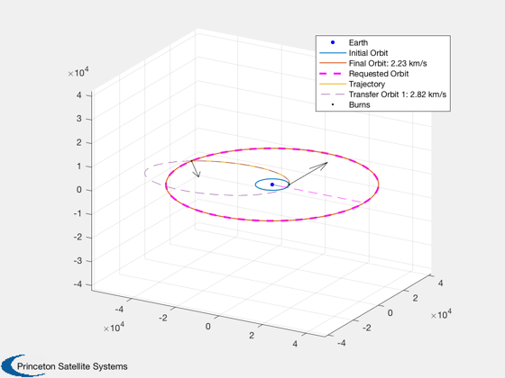
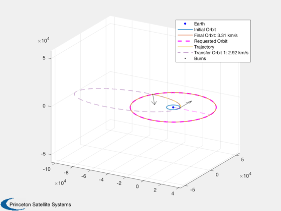

Contents
Optimal Orbit Transfer for a fuel-time criterion, using fminsearch tools
Demonstrate fuel-time optimal solutions by using a custom cost function. Change the tradeoff between dV and time by changing "factor" below. Impulsive burns only.
See also: TargetElementsImpulsiveAnalytic, OptimizeElementsImpulsiveSearch
%-------------------------------------------------------------------------- % Copyright (c) 2019 Princeton Satellite Systems, Inc. % All rights reserved. %--------------------------------------------------------------------------
Orbital parameters
% 300 km altitude LEO elInitial = [6384+300 0 0 0 0 0]; % GEO elFinal = [42164 0 0 0 0 0];
Perform the optimizations
Each burns row is [dv,phi,theta,time] in km/s, radians, and proportion of the pre-burn orbital period. phi is azimuthal angle (around z) and theta is the polar angle (FROM z)
% Optimal dV solution (default cost function) d = OptimizeElementsImpulsiveSearch; burns0 = [1, pi/2, pi/2, 0]; burns1 = OptimizeElementsImpulsiveSearch(elInitial,elFinal,burns0,d); PlotImpulsiveTrajectory(elInitial,burns1,elFinal); % Start from optimal dV burns. We know it'll take more dV so add 500 m/s. burnsGuess = burns1(1,:)+[0.5 0 0 0]; % Weight transit time in cost d.customCost = true; d.customCostFunc = @(burns,elements) MyCost(burns,elements,elFinal,3); burns2 = OptimizeElementsImpulsiveSearch(elInitial,... elFinal,burnsGuess,d); PlotImpulsiveTrajectory(elInitial,burns2,elFinal); % Weight it even more to see what happens d.customCostFunc = @(burns,elements) MyCost(burns,elements,elFinal,6); burns3 = OptimizeElementsImpulsiveSearch(elInitial,... elFinal,burnsGuess,d); PlotImpulsiveTrajectory(elInitial,burns3,elFinal); [absTime] = BurnTimesImpulsive(elInitial,burns1); fprintf('dV-optimal: expended %.3g km/s and took %.3g hours. \n',... sum(abs(burns1(:,1))),(absTime(end)-absTime(1))/60/60); [absTime] = BurnTimesImpulsive(elInitial,burns2); fprintf('Weight time by 3: expended %.3g km/s and took %.3g hours. \n',... sum(abs(burns2(:,1))),(absTime(end)-absTime(1))/60/60); [absTime] = BurnTimesImpulsive(elInitial,burns3); fprintf('Weight time by 6: expended %.3g km/s and took %.3g hours. \n',... sum(abs(burns3(:,1))),(absTime(end)-absTime(1))/60/60); % Custom cost: What is the tradeoff between time and fuel? function cost = MyCost(burns,elInitial,elFinal,factor) absTime = BurnTimesImpulsive(elInitial,burns); dV = abs(burns(:,1)); cost = sum(dV)+(absTime(end)-absTime(1))/10000*factor; end %--------------------------------------
dV-optimal: expended 3.89 km/s and took 5.28 hours. Weight time by 3: expended 5.06 km/s and took 3.29 hours. Weight time by 6: expended 6.23 km/s and took 2.55 hours. 